Alle Varianten laufen schon auf den echten Seiten, aber nur mit dem Link „live ansehen" (Parameter ?glv=). Normale Besucher sehen nichts davon. Varianten kombinierbar, z. B. ?glv=1a,2c.
Gilt für Halloween-Übersicht und Feed 30./31.10. Zum Ansehen auf der Seite nach unten scrollen.
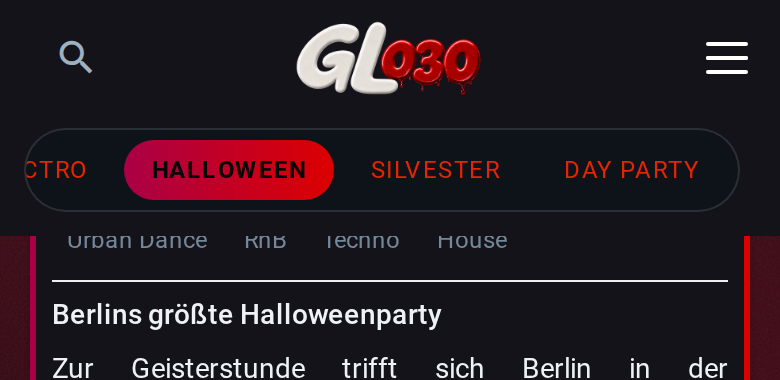
JetztDunkle Fläche reicht unter die Pille.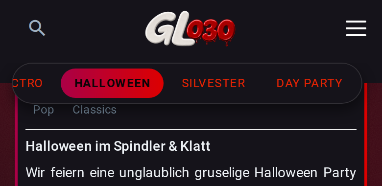
1a · harte Kante auf PillenmitteExakt deine Vorgabe. Untere Pillenhälfte schwebt über dem Inhalt.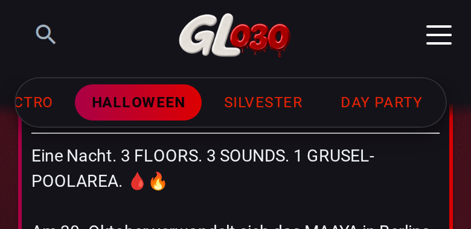
1b · weicher Auslauf ab PillenmitteBis zur Mitte dunkel, dann 12 px Verlauf.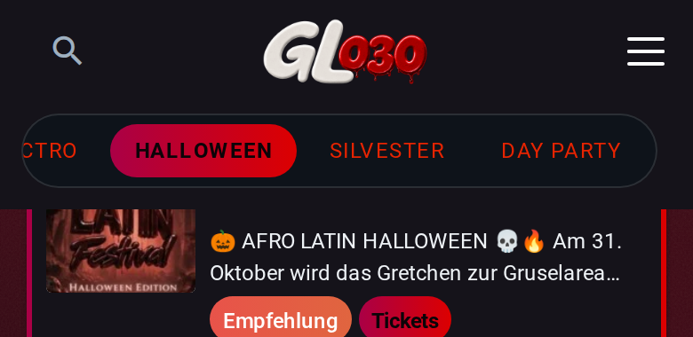
Feed 31.10. jetzt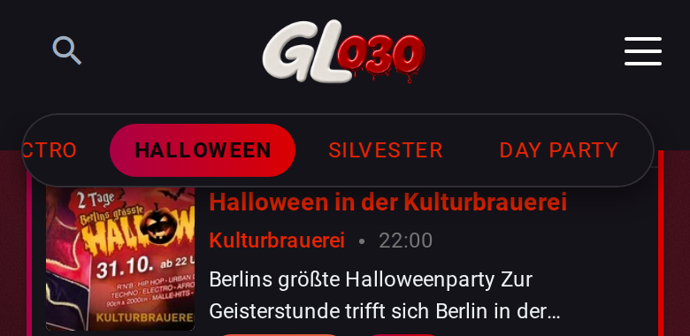
Feed 31.10. · 1a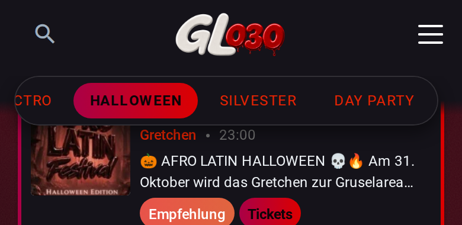
Feed 31.10. · 1bFeed 30./31.10. hat den Button wie der normale Feed schon. Nur die Übersicht zeigt „Gästeliste" bisher als kleinen Chip. Vorschau = Optik; das Klickziel (direkt zur Gästeliste) kommt beim Bauen in den Code.
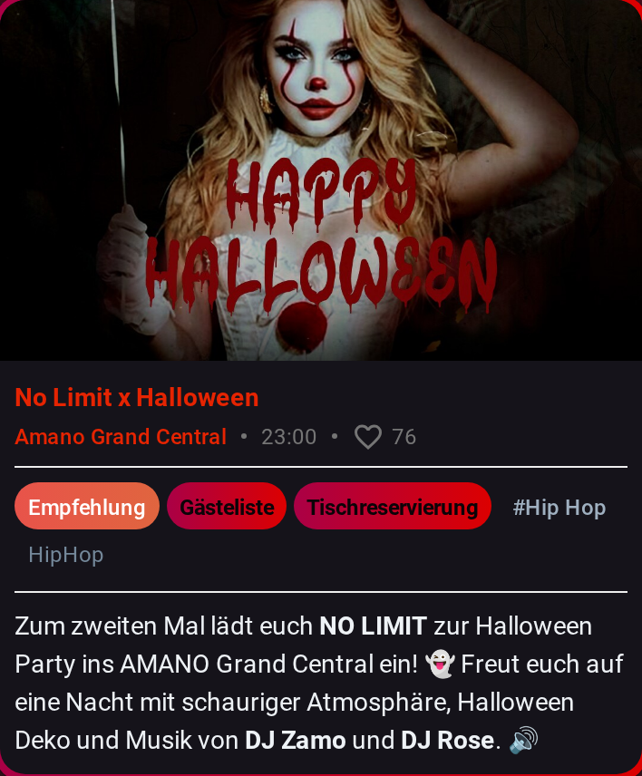
JetztChip zwischen Empfehlung und Tickets.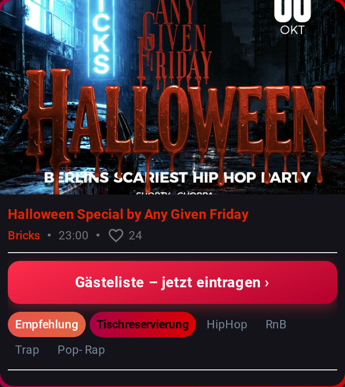
2a · Button volle Breite„Gästeliste – jetzt eintragen ›" über den Chips, 44 px hoch.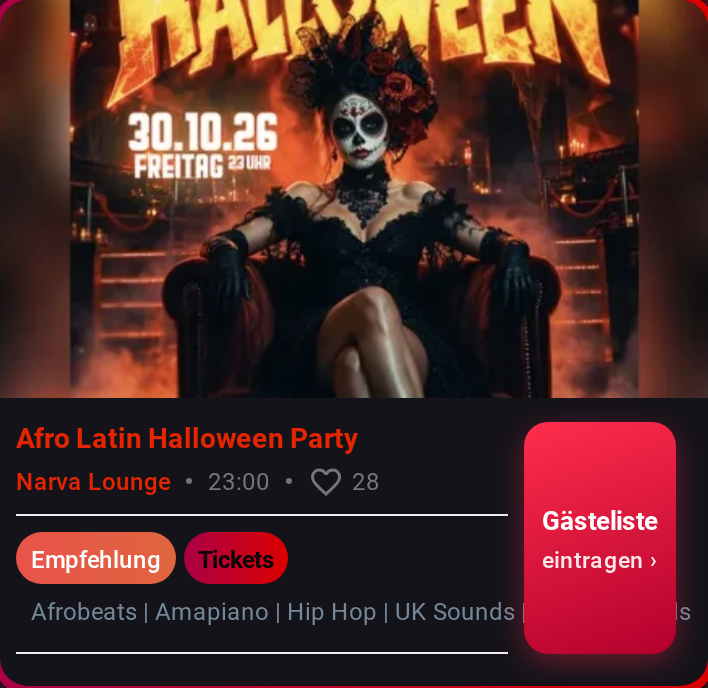
2b · Spalte rechts wie im FeedSenkrechter Button wie im normalen Feed. Titel wird schmaler.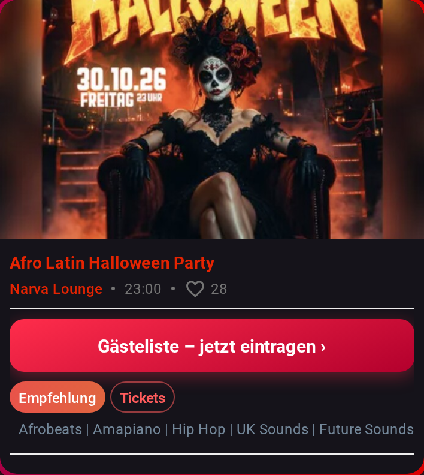
2c · wie 2a, Rest zurückgenommenTickets/Tisch als Umriss-Pills → klare Hierarchie.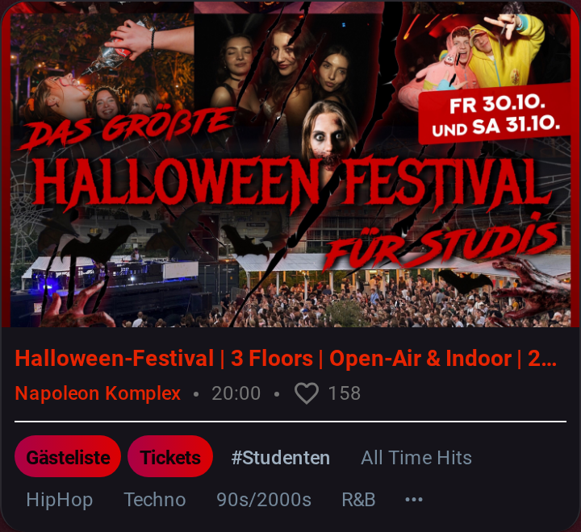
Normale Karte jetzt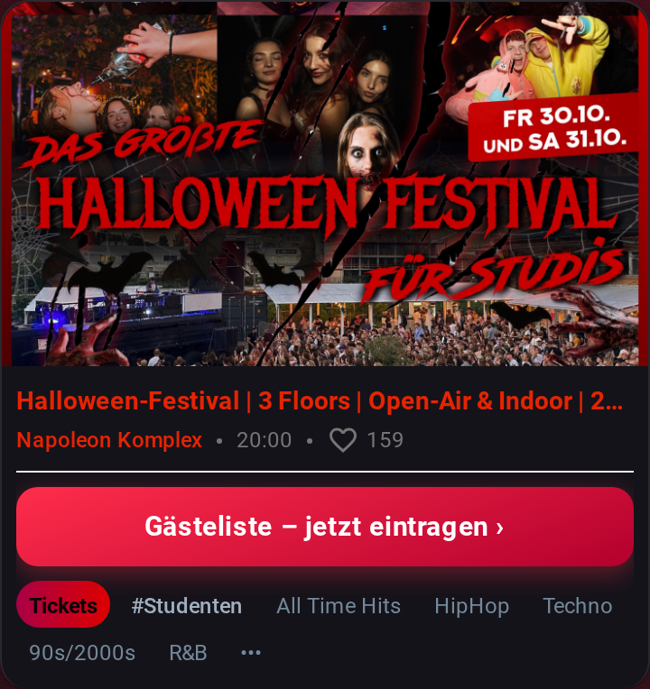
2a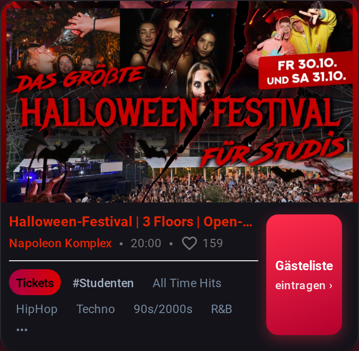
2b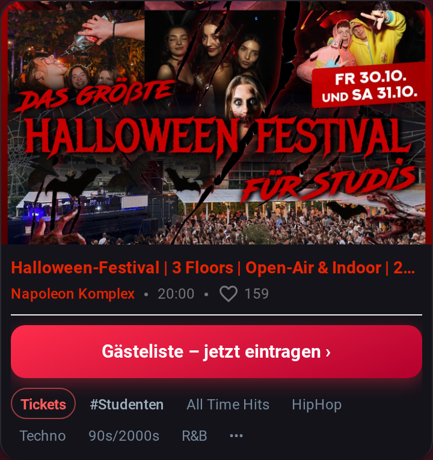
2c